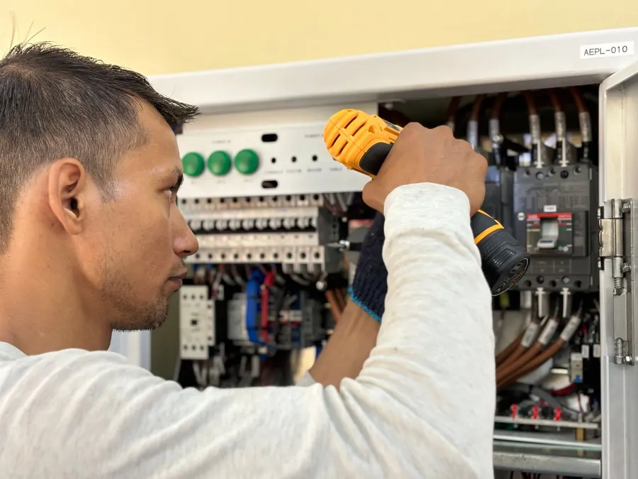
Elektros ir silpnų srovių darbai · Klaipėda
Elektra, apsauga ir ryšys nuo projekto iki išpildymo
Įrengiame elektros instaliaciją, apsaugos ir priešgaisrinę signalizaciją, vaizdo stebėjimą, praėjimo kontrolę, išmanius namus ir telekomunikacinius tinklus. Privatiems ir verslo objektams. Sistemas prižiūrime ir po montavimo.
- Privatūs ir verslo objektai
- Garantinė ir pogarantinė priežiūra
- Valdymas iš telefono
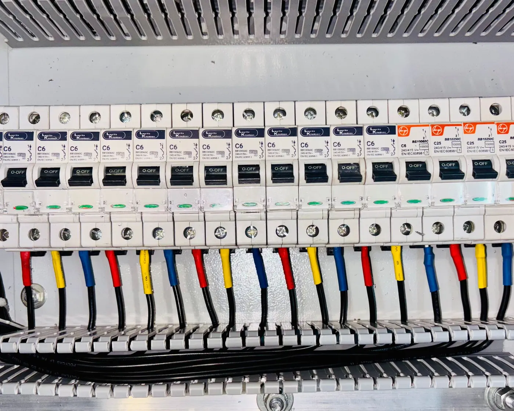
Ar Jums to reikia?
Jei bent į vieną klausimą atsakėte „taip“, mes padėsime
Pasirinkite, kas Jums aktualu, ir susisiekite su mumis.
Neradote savo klausimo? Paskambinkite, patarsime.
+370 602 25552Gedimų atveju visą parą: +370 602 25552 arba +370 46 366668
- 01
Name reikia elektros instaliacijos, o gal išmanaus namo?
Elektra - 02
Norite kameromis matyti, kas vyksta namuose, kai vaikai lieka vieni?
Vaizdo stebėjimas - 03
Reikalinga vaizdo sistema ir įeigos kontrolė?
Praėjimo kontrolė - 04
Norite telefonu valdyti objekto signalizaciją, apšvietimą ir kitą automatiką iš bet kurio pasaulio krašto?
Nuotolinis valdymas - 05
Objekte nėra elektros, o jame esantį turtą reikia saugoti?
Sistemų nuoma - 06
Reikia apsaugos, vaizdo ar priešgaisrinės sistemos priežiūros?
Priežiūra - 07
Reikalinga telekomunikacinių tinklų instaliacija?
Tinklai
Paslaugos
Ką įrengiame
Stipriųjų ir silpnųjų srovių darbai vienoje įmonėje: projektas, montavimas, paleidimas ir priežiūra.
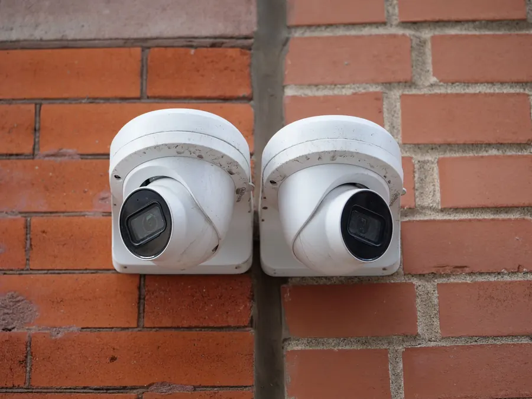
02
Apsaugos signalizacija ir vaizdo stebėjimas
Patalpų, pastatų, perimetro ir teritorijų apsauga: centralės, judesio ir stiklo dūžio davikliai, barjerai, kameros su vaizdu Jūsų telefone.
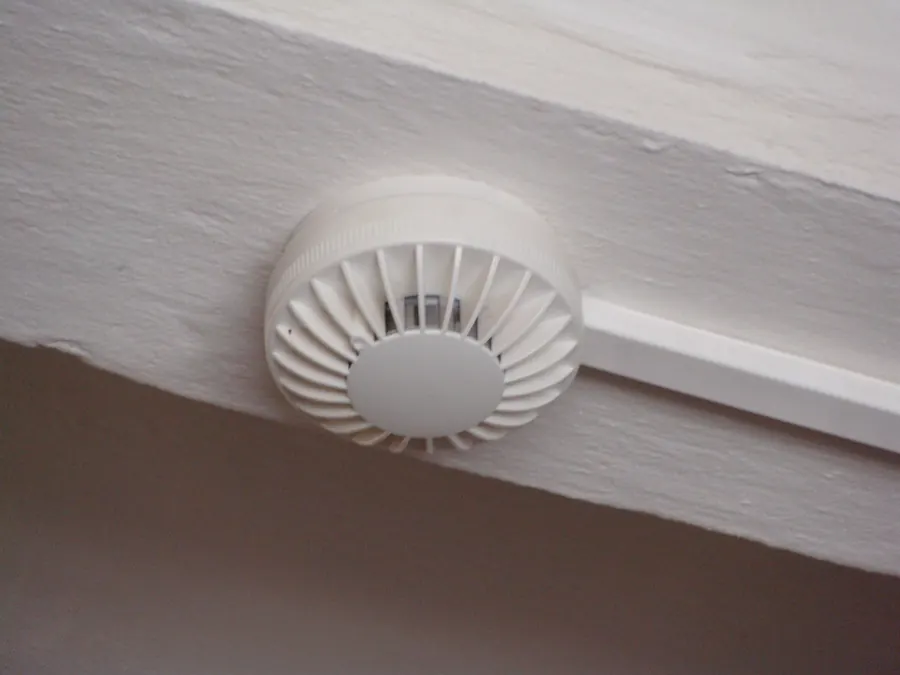
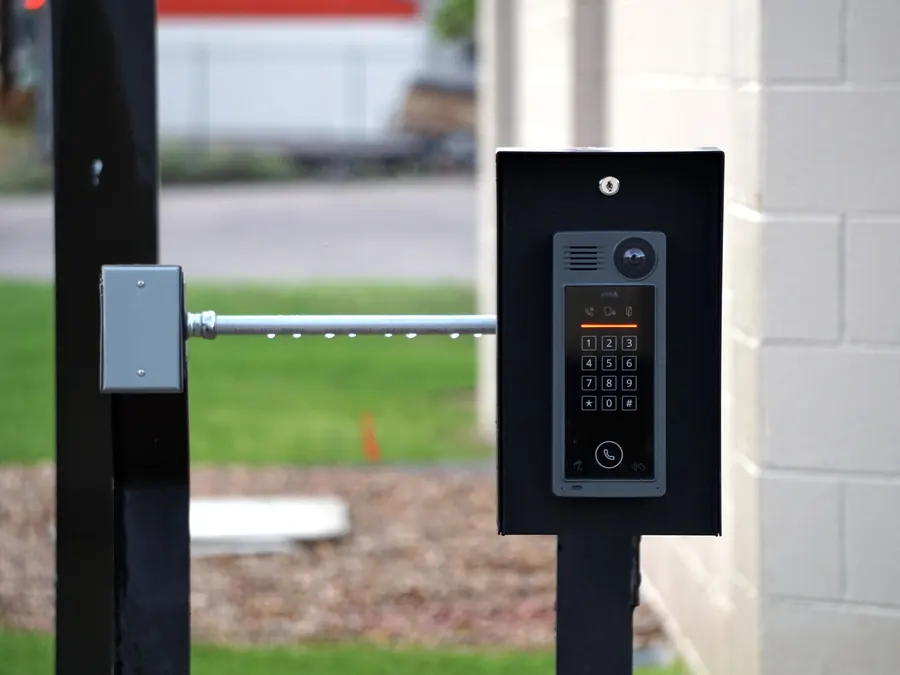
04
Praėjimo kontrolė ir telefonspynės
Kodinės klaviatūros, kortelių ir biometriniai skaitytuvai, elektromagnetinės spynos. Garso, vaizdo ir IP telefonspynės.
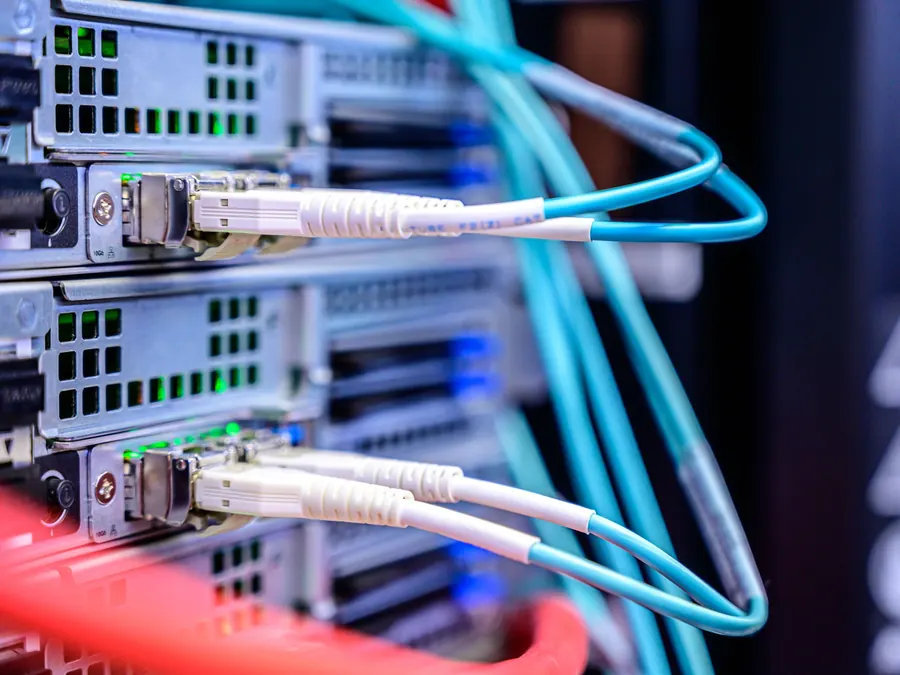
05
Telekomunikaciniai tinklai
Vidaus TV, interneto ir telefono tinklai: vamzdžiai, loveliai, įvadai, komutacinės spintos, maitinimas, testavimas ir priežiūra.
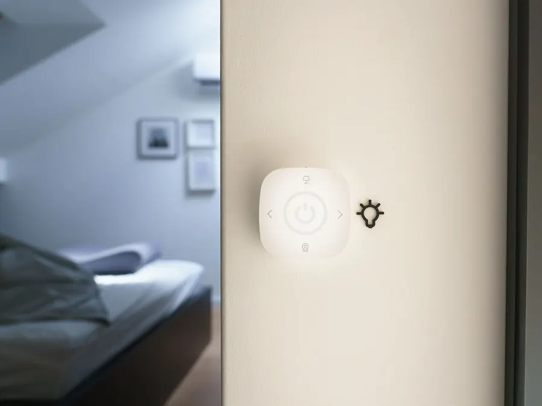
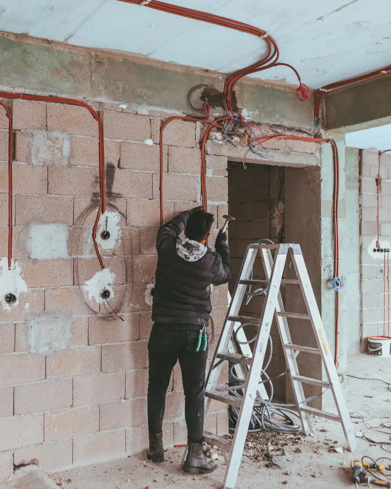
Elektros instaliacija
Vidaus ir lauko elektros darbai
Instaliacijas rengia ilgą darbo patirtį turintys specialistai: įvairaus sudėtingumo darbai privačiuose ir verslo objektuose.
- Instaliuojame kabelius lizdams, jungikliams, šviestuvams ir kitiems įrenginiams
- Montuojame ir prijungiame lizdus, jungiklius, šviestuvus ir kitus įrenginius
- Įrengiame elektros paskirstymo skydus
- Įrengiame lauko apšvietimą
- Atnaujiname patalpų elektros instaliaciją
- Diegiame dekoratyvinį LED apšvietimą
- Operatyviai šaliname gedimus
Išmanūs namai
Namai, kuriuos valdote telefonu
Sujungiame apšvietimą, žaliuzes, muziką, signalizaciją ir kameras į vieną sistemą. Ją valdote iš bet kurio pasaulio krašto.
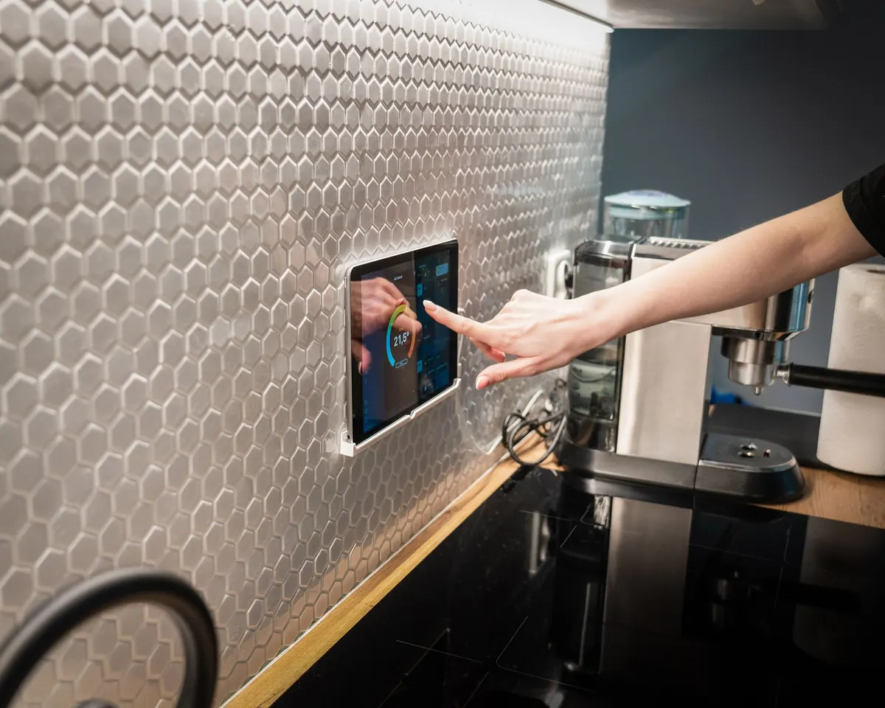
Žaliuzės ir roletai
Valdykite pavieniui, grupėmis ar automatiškai. Galima susieti su signalizacija: žaliuzės pakils, jai aptikus įsibrovėlį.
Apšvietimas
LED juostos, pritemdymas ir spalvų keitimas per programėlę.
Muzika
Mėgstama muzika visuose kambariuose: ryte duše, vakare svetainėje.
Signalizacija
Suveikus signalizacijai, neprašytus svečius pasitiks ryški šviesa ir garsi muzika.
Vaizdo stebėjimas
Su signalizacija sujungtos kameros praneš, vos kas nors priartės prie Jūsų teritorijos.
Nuotolinis valdymas
Įjunkite apsaugą, atidarykite garažo duris ar paleiskite šildymą grįždami iš atostogų.
Priežiūra ir nuoma
Prižiūrime sistemas ir po montavimo
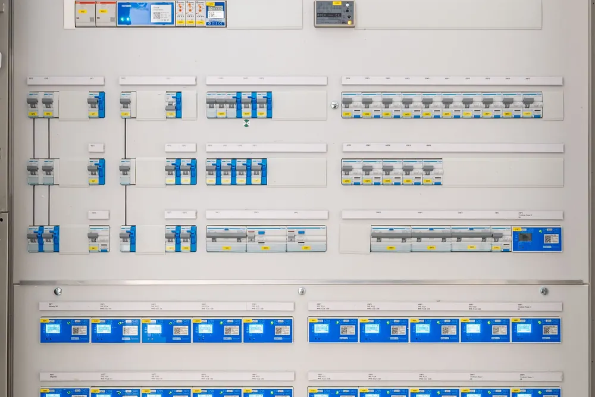
Techninė priežiūra
Dulkės, drėgmė, įtampos šuoliai ar išsikrovę bevielių sistemų elementai gali sutrikdyti bet kurią apsaugos sistemą. Atliekame garantinę, pogarantinę ir avarinę priežiūrą, taip pat sistemų, kurias sumontavo kitos įmonės. Randame ir pašaliname gedimus, parodome silpnąsias vietas.
Gaisrinės signalizacijos techninę būklę būtina tikrinti kartą per metus. Patikros rezultatus surašome į žurnalą arba aktą.
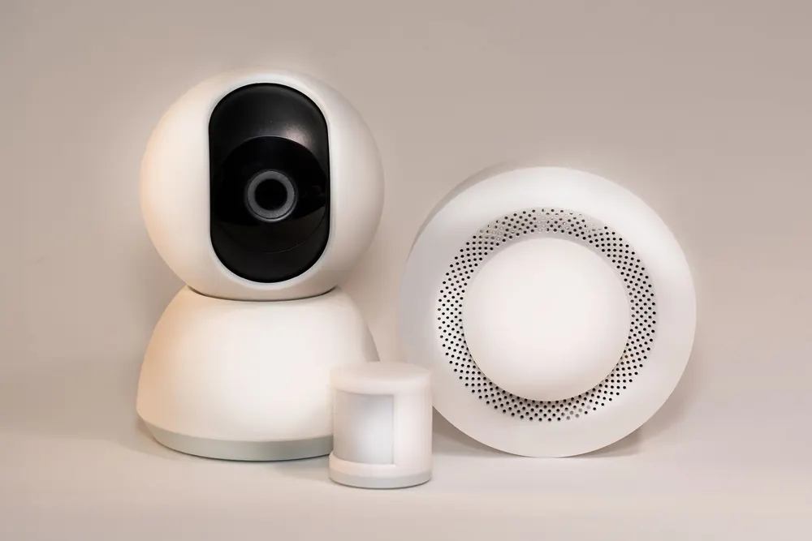
Apsaugos sistemų nuoma
Išvykstate atostogauti ar laikinai paliekate namus? Išsinuomokite belaidę apsaugos sistemą namui, butui, garažui ar sodo nameliui Jūsų pasirinktam laikotarpiui.
- Signalizacija statybų aikštelėms ir pastatams be apsaugos
- Vaizdo stebėjimo sistemos nuoma: vaizdas tiesiai Jūsų telefone
Kaip dirbame
Nuo užduoties iki veikiančios sistemos
- 1
Užduotis
Išnagrinėjame Jūsų užduotį ir objekto poreikius.
- 2
Sprendimai
Išanalizuojame alternatyvas ir įvertiname jų tikslingumą, realumą ir vertę.
- 3
Sąmata
Sudarome sąmatą ir pasiūlome kelis variantus, rekomenduodami patikimiausią.
- 4
Montavimas
Atliekame darbus lanksčiais terminais ir paleidžiame sistemą.
- 5
Priežiūra
Garantinė ir pogarantinė priežiūra Jums patogiu laiku, operatyvus gedimų šalinimas.
Kontaktai
Paskambinkite arba parašykite
Trumpai aprašykite objektą ir ko reikia. Atsakysime ir pasiūlysime sprendimą.
- Telefonas
- +370 602 25552
- Gedimų atveju, visą parą
- +370 602 25552 arba +370 46 366668
- El. paštas
- info@elblicas.lt
- Adresas
- Liepų g. 85A, Klaipėda · Žemėlapyje
- Vadovas
- Rokas Jašinskas
- Rekvizitai
- UAB „Elblicas“
Įmonės kodas 304444048
PVM mokėtojo kodas LT100010656516
Registracijos adresas: Plieno g. 10, Klaipėda